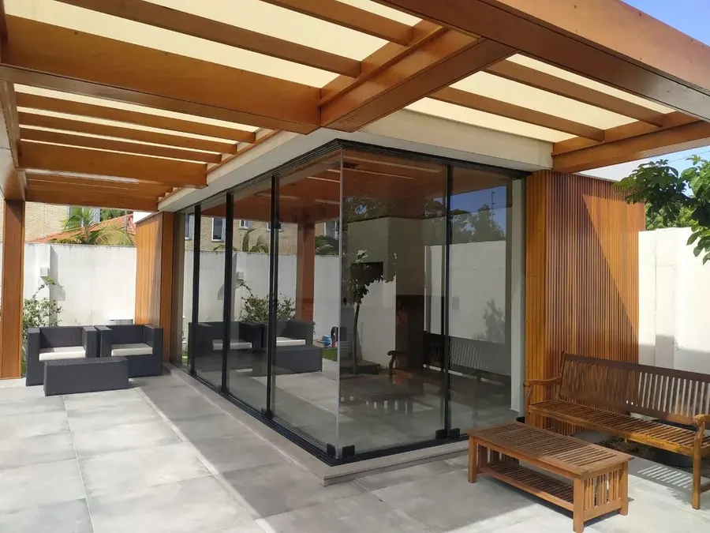
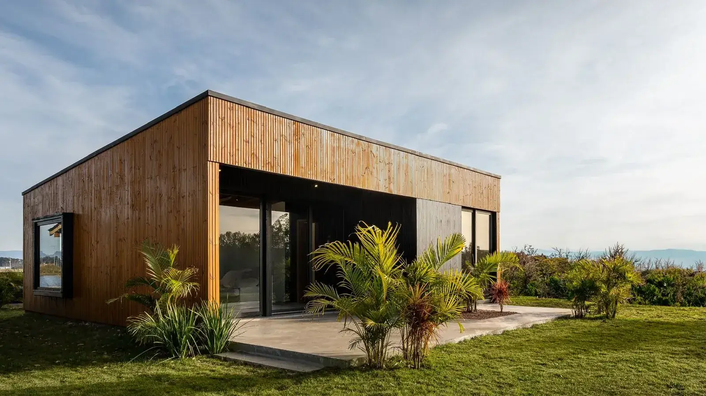
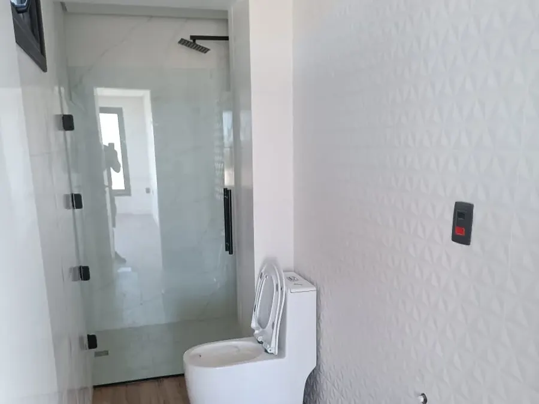
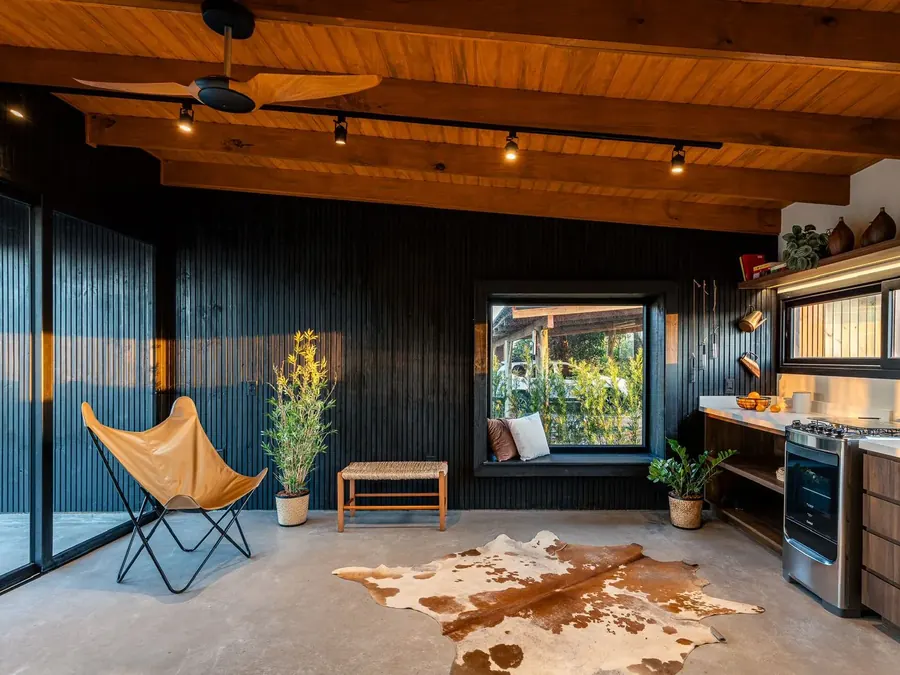
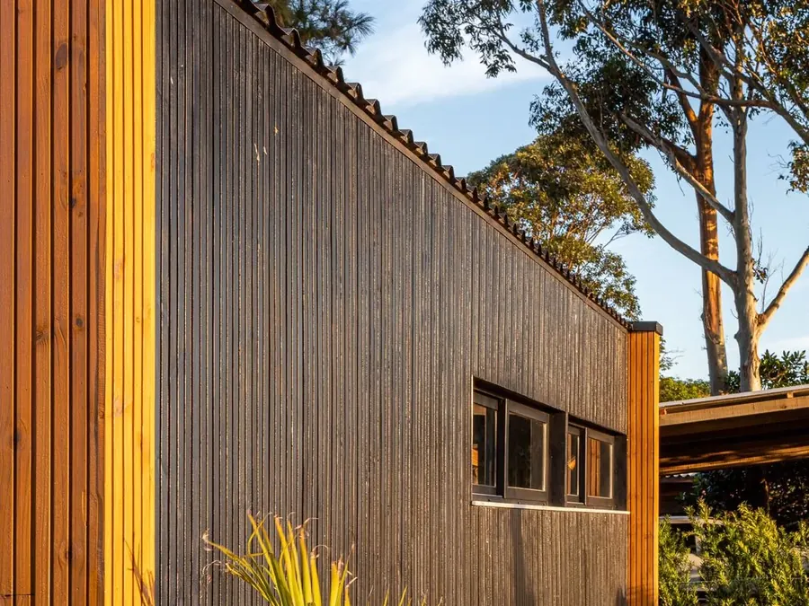
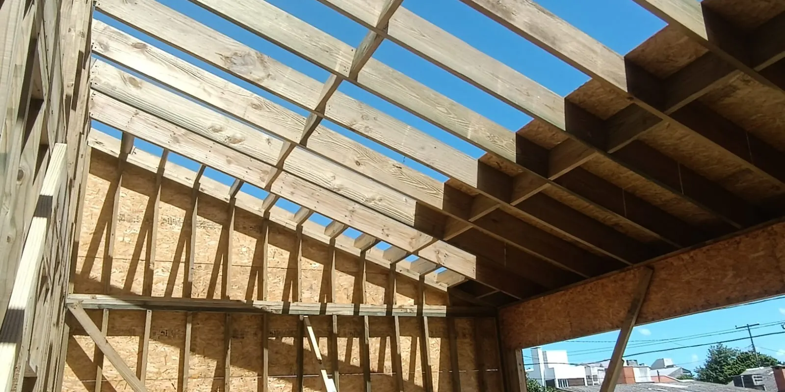
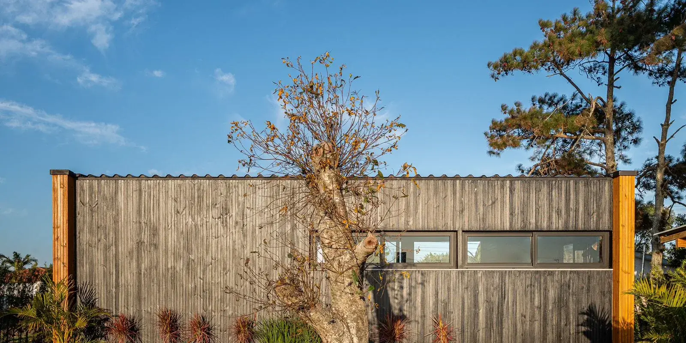
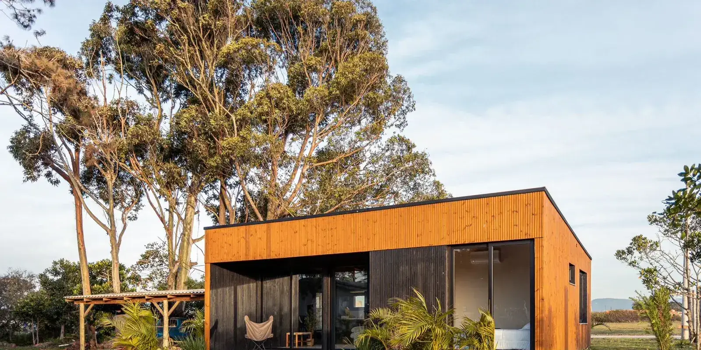

Calhas, telhas e rufos
Folhas, ferrugem e silicone ressecado nos rufos — a porta de entrada da maioria das infiltrações ocultas.

Plano de manutenção preventiva para qualquer imóvel residencial — não precisa ter sido construído ou reformado pela Canun. Visitas técnicas programadas e relatório fotográfico a cada visita, com 25 anos de experiência em construção civil.
A maioria dos danos graves em uma casa começa pequena e silenciosa — e só é percebida quando já virou reforma corretiva. Um plano de manutenção existe exatamente para interceptar esses sinais antes que virem prejuízo.

Folhas, ferrugem e silicone ressecado nos rufos — a porta de entrada da maioria das infiltrações ocultas.

Passam meses despercebidos em válvulas e caixas acopladas. Aparecem na conta de água ou no mofo.

Bornes frouxos no quadro geram calor e são uma das principais causas de incêndio residencial.

Trincas e juntas mal seladas evoluem de estética para estrutural se ignoradas.
Prevenir custa, em média, até 4 vezes menos do que remediar. Um reaperto no quadro elétrico custa uma fração do que é refazer uma fiação queimada ou um forro de gesso destruído por infiltração.

Um prestador comum limpa a calha quando ela já transbordou. A Canun inspeciona o caimento, a fixação estrutural e os pontos de microfiltração antes que a água chegue a destruir alguma coisa — porque quem domina a precisão do Steel Frame e do Wood Frame desenvolve um olhar cirúrgico para vedação e umidade, mesmo em casas de alvenaria tradicional.
“O Plano de Manutenção Preventiva não substitui a garantia legal da obra nem é um seguro residencial. É o acompanhamento técnico profissional e programado que ajuda a preservar a durabilidade do imóvel e a evitar o desgaste que gera prejuízo.”
Canun Sistemas ConstrutivosVistoria técnica com equipamento específico — câmera térmica, teste de corante, teste de estanqueidade. Não é uma olhada superficial.
Cada visita gera um laudo com fotos e apontamentos claros: o que está bom, o que precisa de atenção e o prazo para agir.
Quem cuida da manutenção entende de estrutura, não só de reparo — a mesma equipe técnica por trás de cada obra Canun.
Cada visita técnica segue este roteiro em campo, adaptado ao porte e às características específicas do imóvel.
Limpeza de calhas, condutores e desobstrução de ralos pluviais. Inspeção visual de telhas quebradas ou deslocadas.
Limpeza de caixas de gordura. Teste de estanqueidade em conexões aparentes e checagem de mecanismos de descarga.
Reaperto de conexões no quadro de distribuição. Teste de funcionamento dos disjuntores e do dispositivo DR.
Inspeção de fissuras, integridade do rejunte de revestimentos externos e teste de som cavo em cerâmicas.
Avaliação de áreas frias (banheiros e cozinhas) e checagem de calafetação de esquadrias e janelas.
Teste de estanqueidade das tubulações e troca de mangueiras e reguladores dentro do prazo de validade.
Wood Frame e Steel Frame: casas em construção a seco recebem atenção adicional às selagens e às juntas de dilatação das placas de fachada.
Quer saber quais desses sistemas já pedem atenção no seu imóvel?
Agendar check-up técnicoVistoria técnica diagnóstica no imóvel, com equipamentos específicos para mapear riscos visíveis e ocultos.
Relatório com fotos mostrando exatamente o que está bem e o que exige atenção, com prioridades claras.
Definição do escopo e da periodicidade das visitas de acordo com o porte e a condição atual do imóvel.
Visitas programadas ao longo do ano, com lembrete automático e relatório entregue a cada passagem da equipe.

Para imóveis que não foram construídos pela Canun — ou que ficam fora de Pelotas — o processo começa por uma avaliação técnica prévia, já que cada construção tem seu próprio histórico, projeto e eventuais patologias a mapear.
Vistoria paga que analisa patologias, condições do imóvel, histórico e projetos disponíveis (quando existem). O valor pode ser abatido do plano caso ele seja contratado em seguida.
Com base no laudo da vistoria, a Canun define se aceita o imóvel no plano padrão, propõe um escopo e preço ajustados, ou orienta o proprietário para reparos prévios antes da adesão.
Para imóveis fora de Pelotas, o valor do plano é somado ao custo de deslocamento (km, combustível, tempo) e, quando necessário, hospedagem — cotado caso a caso pela distância e complexidade.
Por que essa etapa existe: sem conhecer o histórico construtivo do imóvel, não é possível garantir a mesma previsibilidade técnica que temos nos imóveis que a própria Canun construiu. A avaliação prévia protege o cliente e a Canun de expectativas desalinhadas com o real estado do imóvel.
Falar sobre a avaliação préviaWood Frame, Steel Frame e construção convencional — obras entregues em Pelotas e região pela equipe que hoje assina o plano de manutenção.

Em uma visita, mapeamos os pontos de atenção da sua casa e mostramos exatamente onde um plano de manutenção preventiva evita prejuízo — sem compromisso.
Falar com a Canun no WhatsApp